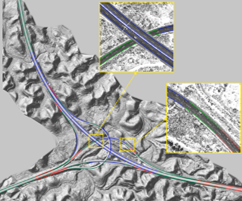

|
Hello! I am Yuzhou Zhou (周雨舟). Welcome! I am currently a third-year M.S. student in Key Laboratory in Information Engineering (LIESMARS), Wuhan University, supervised by Prof. Bisheng Yang and Dr. Zhen Dong. I major in Photogrammetry and Remote Sensing, with a main focus on laser scanning point cloud processing. I am looking for a related PhD position and I am enthusiastic on further promoting the application of 3D computer vision in large-scale scene understanding and transportation analysis. For any suggestions or questions, contact me at yuzhou3d@gmail.com Email / CV / Google Scholar / Research Gate / LinkedIn |
|
My recent research topic is integrating point clouds and images towards digital twins in transportation, which mainly includes 3D instance segmentation, weakly supervised learning, image and point cloud fusion. I have finished several projects related to high-definition (HD) map creation, vehicle-to-everything (V2X) during my previous studies and internships. These experiences equip me with great academic background (3D computer vision, point cloud processing) and programming skills (Python, C++). |
|
[2021.12] Presenting an invited talk Combining Images and Point Clouds for Street Furniture Instance Segmentation in Forum on Intelligent Connected Future and Intelligent Transportation, Shanghai Jiao Tong University (SJTU). [2021.12] Presenting an invited talk Point Cloud Processing in Transportation Infrastructure Surveying in GeoScience Cafe. [video] [2021.11] Our paper Street-view Images Guided Street Furniture Inventory from Mobile Laser Scanning Point Clouds is under review by ISPRS Journal of Photogrammetry and Remote Sensing (IF: 8.979). [2021.10] Winning the National Scholarship for Postgraduates (Top 2%, Ranking 1st). [2021.09] Winning the First Prize Scholarship of Wuhan University (Top 10%). [2021.07] Our paper Highway Alignments Extraction and 3D Modeling from Airborne Laser Scanning Point Clouds is published by International Journal of Applied Earth Observation and Geoinformation (IF: 5.933). [2021.07] Presenting our paper Evaluation of Tunnel Excavation Combining Terrestrial Laser Scanning Point Clouds and Design Models on ISPRS Congress 2021, Nice, France (Top Conference in Remote Sensing). [2020.12] Our paper Evaluation of Tunnel Excavation Combining Terrestrial Laser Scanning Point Clouds and Design Models is published by ISPRS Archives (EI). [2020.12] Our paper Bilevel Convolutional Neural Networks for 3D Semantic Segmentation Using Large-scale LiDAR Point Clouds in Complex Environments is published by Geomatics and Information Science of Wuhan University (EI). [2021.09] Winning the First Prize (Ranking 1st) in the point cloud semantic segmentation contest in ChinaLiDAR 2020 (Top LiDAR Conference in China). |
|
|
|  |
Highway Alignments Extraction and 3D Modeling from Airborne Laser Scanning Point Clouds
Yuzhou Zhou, Ronggang Huang, Tengping Jiang, Zhen Dong, Bisheng Yang International Journal of Applied Earth Observation and Geoinformation (IF: 5.933) Key words: point cloud segmentation, highway feature extraction, energy function Presented in the invited talk in GeoScience Cafe [video] |
 
|
Pratul P. Srinivasan, Richard Tucker, Jonathan T. Barron, Ravi Ramamoorthi, Ren Ng, Noah Snavely CVPR, 2019 (Oral Presentation, Best Paper Award Finalist) supplement / video / bibtex View extrapolation with multiplane images works better if you reason about disocclusions and disparity sampling frequencies. |
|
|


{kind=link}
|
Thanks for the great template. |